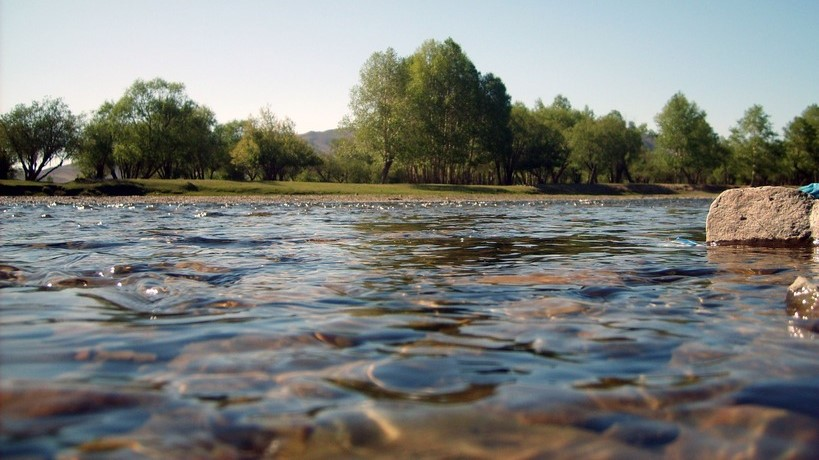

Welcome to the gallery of rivers
Here you will find the best images taken by our professionals so that you get a very real idea of the tour in the exciting world of rafting.

Main Fork of the Salmon River, Idaho


Nestled deep in the Frank Church Wilderness of No Return winds the Salmon river. The Salmon was given the nickname long ago as the River of No Return by the people living near it because of the number of folks that came to visit and fell so in love with the rugged beauty of the river that they never left.